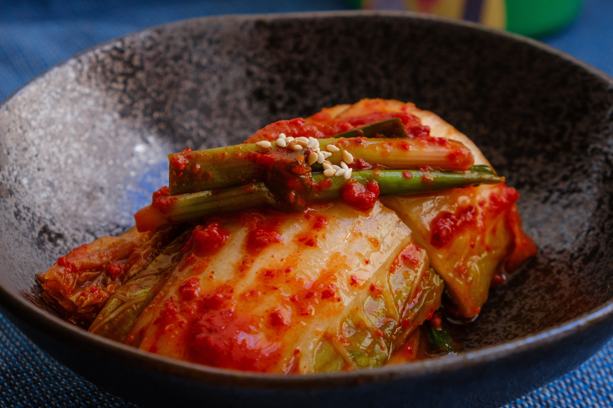

1.Kimchi
One of the oldest and probably the most essential dishes in Korean cuisine,
Kimchi
is a spicy and sour dish made up of fermented vegetables.
It is prepared with various kinds of ingredients, but the most common main ingredient
is cabbage. Kimchi is popular among foreigners for its unique flavor, as well as
its high nutritional value, fiber content and low calorie content. However,
for Koreans, it is most popular due to its significant cultural value. Without kimchi,
dinner is considered incomplete.
